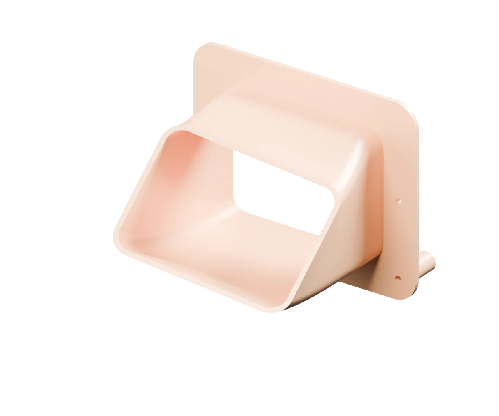
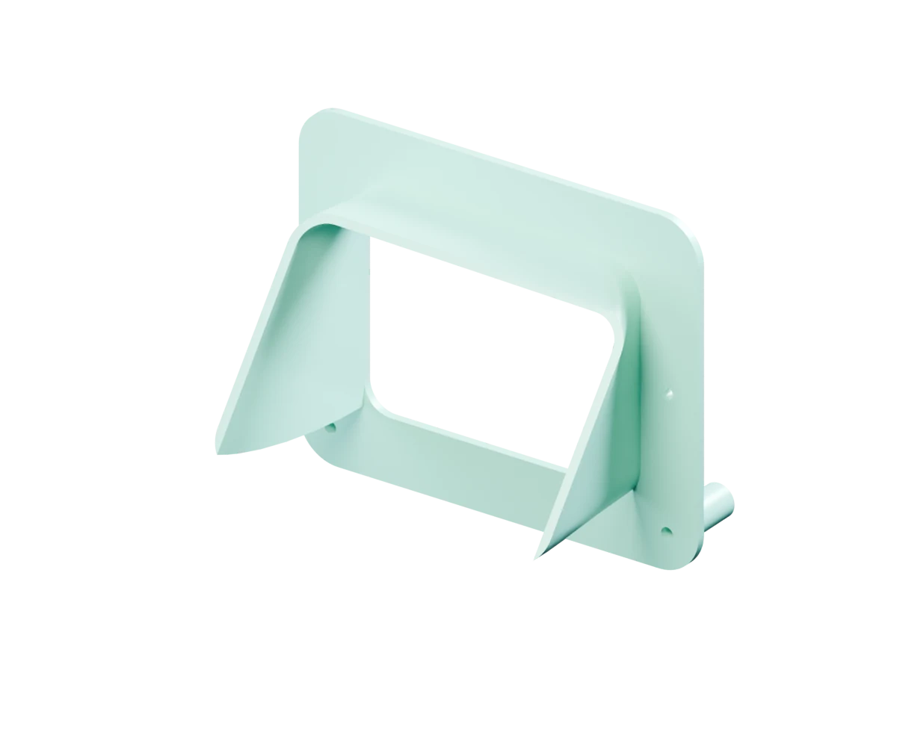
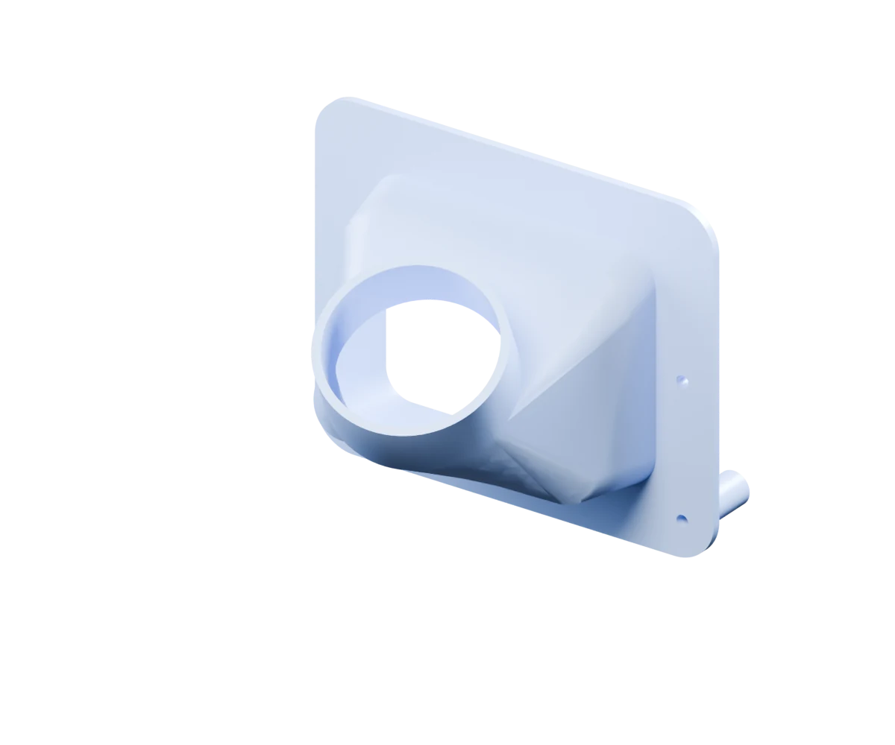

ATHE ENCLOSED APPROACH

Enclosed nozzle
Contains the passage and carries the outlet farther into the wheel well.
- Passage
- Enclosed
- Terminal geometry
- 106 × 78 mm
- Main compromise
- Greater reach to check
GR COROLLA / FRONT BRAKE STUDY
Three approaches.
One brake corner.
Explore the real geometry, the different connections, and the trade-offs behind each cooling concept.
Find your approachDigital concepts · Fit, materials and cooling unverified.

Real geometry. Presentation colours. Nominal scale, not calibrated fit.
B — COMPACT OPEN GUIDE
A shorter, broad guide that leaves one side open. It is the first packaging candidate, with less control over where the air goes.
Dimensions are design values in nominal millimetres. B’s outlet describes an open envelope, not a closed flow section.
An open side makes the guide compact and easy to inspect. Air can also spill out, reducing directional capture.
Concept connection only. No mechanical bridge to the moving brake assembly.
SIDE BY SIDE
The same provisional liner interface.
Three different ways forward.

Contains the passage and carries the outlet farther into the wheel well.
A shorter open guide with less modeled body volume and possible airflow spill.

A transition for a future hose-fed layout. The hose and rotor receiver are not included.
B uses 51.9% less CAD body volume than A. That is a geometry comparison; it does not establish strength, printability or cooling benefit.
BUILT ON EVIDENCE
These are scan-based digital concepts.
Physical fit, material suitability and
cooling performance remain unverified.
All three concepts use the same scan-derived datum and proposed liner attachment. The nonplanar lip, mounting contact and sealing still need measured refinement.
Start by refining the shared interface, then evaluate B for packaging with A as the enclosed reference. Flow testing could change that choice.
Each concept has valid CAD solids and a reflected counterpart. All six STEP exports passed fresh readback. Saved 3D meshes were checked against the source geometry.
Static scan checks found no triangle crossings in the recorded pose. The shared closest vertex sample is 0.829 mm; it is not a certified minimum clearance.
Physical scale, liner contact and sealing, backside support, fastener retention, wheel and tyre clearance, full steering and suspension movement, and material/temperature testing.
The wheel is absent from the scan. Reflected geometry does not verify the opposite side. No prototype or installation is approved by this study.
C finishes the upstream component concept. An actual hose fit, retention method, moving hose route and rotor-side receiver are separate work. Its nominal 63 mm outside / 57 mm inside round band is a design choice.
The terminal section is 67.6% smaller than the inlet section. The piecewise taper has slope changes; pressure loss and cooling have not been measured.
“Part” and interactive 3D show the new component. “In the car” places it against the recorded scan pose. “Section” is a diagnostic visual cut, not a manufactured half-part.
Colours and orientation aid comparison. Dimensions remain nominal and uncalibrated. There is no simulated airflow in these animations.
C’s tested one-degree aim edit succeeds; a tested three-degree edit is rejected by the CAD construction. Arbitrary parameter changes are not qualified.
THE DESIGN CONVERSATION
GR Corolla, GR Yaris and other-platform references informed the alternatives. Their dimensions, materials and performance claims do not transfer to these concepts.